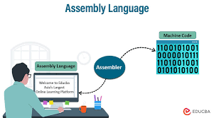

n computer programming, assembly language (alternatively assembler language[1] or symbolic machine code),[2][3][4] often referred to simply as assembly and commonly abbreviated as ASM or asm, is any low-level programming language with a very strong correspondence between the instructions in the language and the architecture's machine code instructions.[5] Assembly language usually has one statement per machine instruction (1:1), but constants, comments, assembler directives,[6] symbolic labels of, e.g., memory locations, registers, and macros[7][1] are generally also supported. The first assembly code in which a language is used to represent machine code instructions is found in Kathleen and Andrew Donald Booth's 1947 work, Coding for A.R.C..[8] Assembly code is converted into executable machine code by a utility program referred to as an assembler. The term "assembler" is generally attributed to Wilkes, Wheeler and Gill in their 1951 book The Preparation of Programs for an Electronic Digital Computer,[9] who, however, used the term to mean "a program that assembles another program consisting of several sections into a single program".[10] The conversion process is referred to as assembly, as in assembling the source code. The computational step when an assembler is processing a program is called assembly time. Because assembly depends on the machine code instructions, each assembly language[nb 1] is specific to a particular computer architecture.[11][12][13] Sometimes there is more than one assembler for the same architecture, and sometimes an assembler is specific to an operating system or to particular operating systems. Most assembly languages do not provide specific syntax for operating system calls, and most assembly languages can be used universally with any operating system,[nb 2] as the language provides access to all the real capabilities of the processor, upon which all system call mechanisms ultimately rest. In contrast to assembly languages, most high-level programming languages are generally portable across multiple architectures but require interpreting or compiling, much more complicated tasks than assembling. In the first decades of computing, it was commonplace for both systems programming and application programming to take place entirely in assembly language. While still irreplaceable for some purposes, the majority of programming is now conducted in higher-level interpreted and compiled languages. In "No Silver Bullet", Fred Brooks summarised the effects of the switch away from assembly language programming: "Surely the most powerful stroke for software productivity, reliability, and simplicity has been the progressive use of high-level languages for programming. Most observers credit that development with at least a factor of five in productivity, and with concomitant gains in reliability, simplicity, and comprehensibility."[14] Today, it is typical to use small amounts of assembly language code within larger systems implemented in a higher-level language, for performance reasons or to interact directly with hardware in ways unsupported by the higher-level language. For instance, just under 2% of version 4.9 of the Linux kernel source code is written in assembly; more than 97% is written in C.
will be held three times a week, twice or once (as you choose) 3stead of 560 GEL. Once a week:-- T times a week:-- The monthly cost of the course is discounted: 390 GEL, instead of 740 GEL. Twice a week:-- The monthly cost of the course is discounted: 290 GEL inhe monthly cost of the course is discounted: 170 GEL instead of 340 GEL. The duration of the basic stage is 1 year, and the in-depth course - 2.5 years (depending on the student's goals) Successful students are employed in Goal-Oriented Academy • GOA and partner companies with a 100% guarantee. or consultation, write us a message in a private message:
At GOA, we are rewriting the standards for technical education. Here's why our approach is unique:
Innovative Hybrid Learning:
We're not just an online academy; We are a community that believes in the power of connection. Our latest hybrid model combines the best of both worlds: digital comfort and real-world adventure.
Worldly wisdom:
While others guard the confines of their office spaces, we, meanwhile, take our students on exciting journeys to spectacular destinations. We create unforgettable memories that inspire creativity and friendship.
Building Lifelong Bonds: Goal-Oriented Academy
GOA is not just about programming; It's about making lifelong friendships.
Flexible Online Learning: Our online platform is state-of-the-art, providing learning flexibility and convenience. You can access our courses from anywhere in the world
Don't settle for ordinary. Join the Goal-Oriented Academy • GOA and experience the extraordinary!. Unlock your potential, make friends with life and discover the world while mastering programming skills.
Join us and become successful!